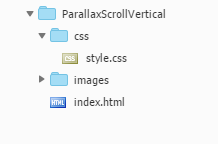
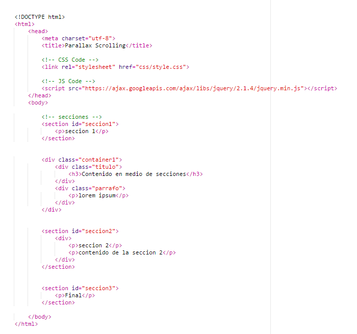
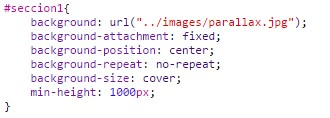
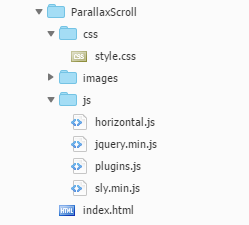
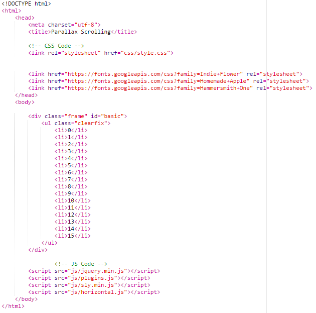
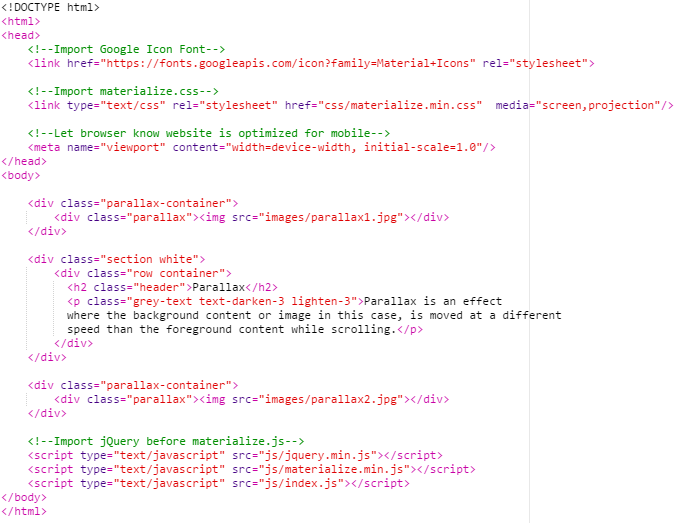
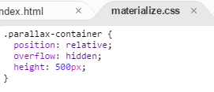
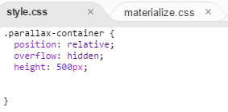
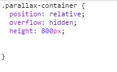
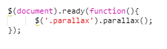

El parallax scrolling es una técnica de diseño web que permite animar con movimientos todos los elementos de una página, al mismo tiempo o por separado, mientras te desplazas en ella haciendo scroll. Este efecto se logra colocando todos los elementos de una web por capas, así si quieres mover solo el texto y dejar estático el fondo lo puedes hacer. Además, ofrece al usuario una experiencia mucho más enriquecida y atractiva a la vista mientras navega por la web reteniéndolo más tiempo que quizá una web habitual. Sin embargo, hay que tener en cuenta que esta tecnología suele utilizar imágenes grandes, con lo cual hay que saberlas comprimir bien para mantenerla ligera de carga
Por otro lado, dado que existen dos tipos de scroll, el vertical y el horizontal, nos encontramos con dos tipos de parallax, aquellas en el que la transición de pantallas se hace a través de un movimiento vertical y las que se suceden en movimiento horizontal. La más común es el efecto de scroll vertical.
Para llevar a cabo este diseño lo primero que tendremos que hacer es crear una estructura de ficheros y directorios similar a la siguiente:
En el fichero html es recomendable dividir el contenido en secciones mediante la propiedad section aunque también se podría hacer mediante divs u otros elementos de html5. En cada sección se puede poner todo el contenido que se desee, incluso entre medio de las secciones, como vemos en esta página, también podemos colocar contenido.
Finalmente tendremos un html similar al siguiente:
En este ejemplo en el css es donde realmente se consigue el efecto parallax. Para ello en cada una de las secciones tendremos que colocar una imagen como fondo y encima de ella estará el contenido que nosotros queramos.
Este código lo que hace es poner una imagen en la seccion1, la cual será nuestra imagen de fondo. Ademas hace que esa imagen esté fija al viewport (área visible de nuestro navegador), que este centrada, no se repita y cubra todo el fondo. Por último, se le aplica un tamaño fijo de 1000px, este valor puede variar según nuestras necesidades.
De las propiedades anteriores la que más nos interesa y con la que se consigue realmente el efecto parallax es la de background-attachment: fixed, puesto que esta propiedad mantiene el fondo fijo que es precisamente lo que queremos para que al hacer scroll los elementos que se encuentren sobre ese fondo “adquieran movimiento” respecto del mismo.
Para llevar a cabo el efecto parallax de forma horizontal hemos usado el plugin Sly el cual podemos descargar, además de ver algunos ejemplos de su uso, en el siguiente enlace Sly.
Con este plugin lo que conseguimos es que el desplazamiento horizontal sea mucho mas sencillo de hacer.
Sly es una biblioteca de JavaScript para desplazamiento avanzado unidireccional con soporte de navegación basado en elementos.
Se puede utilizar como un simple reemplazo de la barra de desplazamiento, como un elemento avanzado basado en la herramienta de navegación, o como una gran interfaz de navegación y animación para los sitios web que usen parallax. Esto se logra mediante una poderosa y amigable API de desarrollo que proporciona un montón de métodos muy útiles que le dan control sobre todo.
JQuery 1.7+
Sly funciona en cualquier navegador de escritorio, incluso en IE6.
Actualmente no funcional en dispositivos móviles
La estructura de directorios que debemos generar es bastante similar que en el caso anterior con la diferencia de que para hacer el movimiento horizontal con parallax será necesario aplicar javascript. Por tanto, la estructura quedaría de la siguiente forma:
En el documento index.html tendremos un fichero html estructurado de la forma que nosotros queramos, solo debemos tener en cuenta que se deben incluir los ficheros javascript del plugin correctamente y la seccion que se vaya a utilizar con parallax horizontal debe estar estructurada usando elementos div,ul y li.
En cada uno de los li tendremos lo que en el ejemplo de parallax vertical eran nuestras secciones de esta forma conseguiremos tener el contenido nuevamente divido por secciones
Por otro lado, si no queremos poner ningun tipo de contenido si no que queremos generar el efecto parallax unicamente con imagenes simplemente bastará con sobreponer unas imagenes sobre otras y aplicarle la propiedad fixed a aquellas que conformen el fondo
El documento html deberia tener una estructura similar a la siguiente, aunque puede ser modificada. Para mas info: Sly Documentation
En la hoja de estilos debemos aplicar a nuestro fondo la propiedad background-attachment con valor fixed y ademas de esto aplicar los estilos siguientes a los elementos ul y li para que se vean y se recorran de forma horizontal.
Como vemos en la imagen esto se consigue mediante la propiedad float:left, nuevamente nos damos cuenta de que para llevar a cabo un efecto parallax no es necesario el empleo de tecnicas costosas sino que con simples propiedades css y algo de javascript (en este caso) puede conseguirse.
En este ejemplo en el css es donde realmente se consigue el efecto parallax. Para ello en cada una de las secciones tendremos que colocar una imagen como fondo y encima de ella estará el contenido que nosotros queramos.
Este código lo que hace es poner una imagen en la seccion1, la cual será nuestra imagen de fondo. Ademas hace que esa imagen esté fija al viewport (área visible de nuestro navegador), que este centrada, no se repita y cubra todo el fondo. Por último, se le aplica un tamaño fijo de 1000px, este valor puede variar según nuestras necesidades.
De las propiedades anteriores la que más nos interesa y con la que se consigue realmente el efecto parallax es la de background-attachment: fixed, puesto que esta propiedad mantiene el fondo fijo que es precisamente lo que queremos para que al hacer scroll los elementos que se encuentren sobre ese fondo “adquieran movimiento” respecto del mismo.
La estructura sera practicamente la misma que en los dos casos anteriores solo que aqui añadiremos los css y js que materialize necesita. En este caso materialize nos facilita bastante el trabajo y añadiendo algunas pocas lineas tendremos el efecto parallax creado.
Los directorios y ficheros que deberiamos tener en nuestra carpeta serán los siguientes:
Como vemos en la imagen dentro de la carpeta css hemos añadido los ficheros css propios de materialize y ademas un fichero style.css, este ultimo será nuestro fichero de estilos. Cabe destacar que para hacer cambios en el css que provee materialize debemos buscar en la hoja de materialize el elemento que queremos modificar y copiar el codigo css y pegarlo en nuestra hoja de estilos. Hecho esto modificaremos esos estilos desde nuestro fichero para que los cambios surtan efecto.
El html que tenemos sigue la estructura que nos indica materialize, añadiendo a cada elemento las clases correspondientes para poder llevar a cabo el efecto parallax.
El html siguiendo las indicaciones aqui descritas presenta la estructura siguiente:
El apartado del css para este ejemplo no es necesario modificarlo, si queremos dejar los estilos que materialize nos proporciona podemos hacerlo dado que no influyen para que el efecto parallax funcione.
En caso de que queramos modificarlos como ya se ha explicado anteriormente seguiremos una serie de pasos. A continuacion se explican los pasos a seguir para cambiar el tamaño del div con clase parallax-container (con otros elementos la dinamica es la misma):
Copiar el codigo css correspondiente al elemento que queremos modificar:
Pegarlo en nuestra hoja de estilo propia:
Modificar los estilos existentes o añadir nuevos:
En el primer ejemplo veiamos que no era necesario usar javascript, sin embargo con materialize si que es necesario. Lo bueno es que para el efecto parallax en concreto solo son necesarias apenas tres lineas de codigo, ¿bastante sencillo no?
Esas lineas las añadiremos a nuestro fichero index.js puesto que como ya sabemos no es posible modificar los ficheros de materialize. Dicho esto introducimos las lineas siguientes a nuestro js y con eso ya tendremos el efecto parallax
